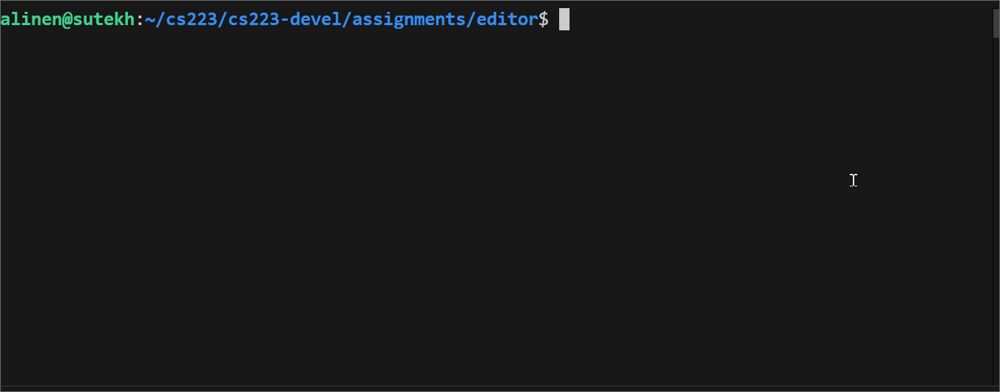

Assignment 5: MyEditor Part 1
Due Friday, February 20th, before midnight
We will spend the next two weeks building your own VIM editor using the ncurses library.

The goals for this assignment are:
-
Design a user application
-
Design data structures that support good performance
-
Work with C: structs, malloc/free, etc
-
Work with the ncurses API for working with files and the terminal
Update your repository
We will use the same repository as Assignment 1
Pull to get the basecode from you repository on Github
$ cd https://github.com/BrynMawr-CS223-S26
$ git pullYour repository should now contain a new folder named A05-A06.
Background: NCurses
We will the ncurses library to render text to the screen and respond to user input.
The program below initializes a terminal screen, prints "Hello World!",
and exits when the user presses any key. All ncurses applications need to
initialize (initscr) and cleanup (endwin) the terminal at the start and end
of the program.
#include <ncurses.h>
int main()
{
initscr(); /* Start curses mode */
printw("Hello World !!!"); /* Print Hello World */
refresh(); /* Print it on to the real screen */
getch(); /* Wait for user input */
endwin(); /* End curses mode */
return 0;
}1. Load
You will design a C data structure for loading and saving a file from disk.
In file, myfile.h, define a struct that contains information about a currently loaded file. At minimum,
it should contain
-
The number of lines in the file
-
A double linked list of lines. You can assume that all lines are shorter than 256 bytes.
In the files, myfile.h and myfile.c, define functions that implement the following features. These functions should take your struct as an argument.
-
Open a file and load its contents
-
Save a file
-
Cleanup the file’s resources
You should use the extern keyword in the header file to declare your functions. The implementations of your functions should be in the .c file. See the lecture notes for an example.
|
In the file, test_file.c, implement a program that tests your functions. Your test program should load a file, save it
to a different file, and then close and clean it up.
$ cat ./test_file.c
#include "myfile.h"
int main() {
struct myfile file;
if (!load(&file, "tolstoy.txt")) {
printf("Could not open file\n");
}
if (save(&file, "test.txt")) {
printf("Could not save file\n");
}
close(file);
return 0;
}
$ valgrind ./test_file
=8717== Memcheck, a memory error detector
==8717== Copyright (C) 2002-2017, and GNU GPL'd, by Julian Seward et al.
==8717== Using Valgrind-3.18.1 and LibVEX; rerun with -h for copyright info
==8717== Command: ./test_file
==8717==
Loading file tolystoy.txt with 64941 lines.
==8974==
==8974== HEAP SUMMARY:
==8974== in use at exit: 0 bytes in 0 blocks
==8974== total heap usage: 2 allocs, 2 frees, 1,496 bytes allocated
==8974==
==8974== All heap blocks were freed -- no leaks are possible
==8974==2. View
In the file, myeditor.c, implement an application that can view text files loaded with a command line argument.
$ ./myeditor
usage: myeditor <filename>
$ ./myeditor bee.xt
bee.xt not found
$ ./myeditor tolstoy.txtFeatures
-
Reuses your file data structure
-
Loading a file from the command line
-
Quitting with
:q -
Scrolling through the file using the arrow keys
-
Displaying the current row, column, and filename in a banner on the last row
Feel free to extend your API from the previous question!
3. Submit your Work
Push you work to Github to submit your work.
$ cd A05-A06
$ git add *.c
$ git commit -m "A05-A06 milestone complete"
$ git pushGrading Rubric
Assignment rubrics
Grades are out of 4 points.
Code rubrics
-
Code checkins
-
View features
-
Search features
-
Edit features
For full credit, your C programs must be feature-complete, robust (e.g. run without memory errors or crashing) and have good style.
-
Some credit lost for missing features or bugs, depending on severity of error
-
-12.5% for style errors. See the class coding style here.
-
-50% for memory errors
-
-100% for failure to checkin work to Github
-
-100% for failure to compile on linux using make